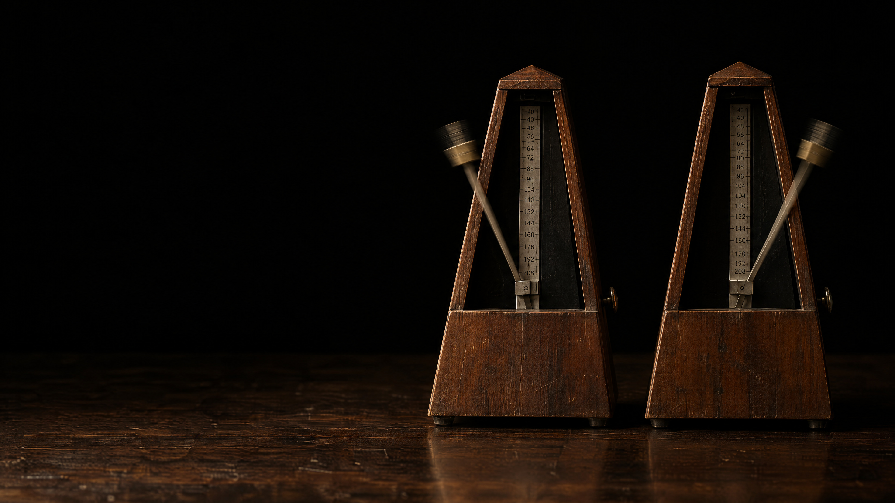

eighty musicians can all keep time, so why does the orchestra still need someone to give the beat?
what the receiver sees
the sender knows where each symbol begins, while the receiver has to find out from the light.
cause one: no two clocks run alike
the error per symbol is tiny, but it adds up until the receiver reads the neighbor.
cause two: the sensor needs time to look
there is no error message, just a number that matches no symbol.
both causes ask one question:
when does the next symbol begin?
a clock can tell the receiver,
or a change in the light can.
how much room does a reading have?
half a symbol is the most room a reading has, and the sensor's window takes some of it away.
when does it tip?
clocks that differ by 0.5 % move 5 ms apart every second, so 50 ms of room last ten seconds and 40 ms eight.
the same clocks at two rates
ten times the rate leaves a tenth of the room, while the error grows just as fast.
faster breaks sooner
the same two clocks last a hundred seconds at one symbol per second and five at twenty.
markers reset the error
with a marker every four seconds the error starts again from zero before it can grow.
how the receiver uses a marker
try it: the drift simulator
a marker every eight symbols
costs an eighth of the rate.
once at the start costs nothing but lets the error grow without limit.
whether markers pay off depends on how far your clocks drift, and that is a question for a measurement.
a start bit before every character (UART)
the receiver restarts its clock at every start bit, so its clock only has to hold for ten bits.
the missing second (DCF77)
the gap in second 59 is a marker that tells every radio clock where the next minute begins.
a pulse after every line (VGA)
after every line the monitor starts again at the left edge, so the picture never drifts sideways.
a marker in every bit (10BASE-T ethernet)
every bit keeps its agreed length, and the change in its middle resets the receiver's clock.
light with a marker in every bit (RC-5)
a remote control sends light just like your LED, and the change in the middle of every bit keeps the TV in step.
a forced change every seven bits (USB)
the receiver resets its clock at every change, and the extra zero makes sure one comes at least every seven bits.
a change means “next”
two equal symbols in a row make no change, so the receiver cannot tell one from two.
the change carries the bit
the bit sits in the change, so there is always a change to see.
how many choices does a change have?
the current color is never a choice, so k colors leave k − 1 choices for every change.
what the change costs in bits
for a clean two bits per change you need five colors, not four.
no letter twice in a row (DNA storage)
a run of equal letters is hard to count, so four letters that never repeat leave three choices, just as four colors do.
without a clock is not without time.
a color has to hold still for a moment before it counts,
and the link manages only so many changes per second.
two ways, two price tags
what a file costs
what 2 KiB look like
raw, the parrot needs 48 KiB, and only as a compressed JPEG does it fit into 2 KiB.
2 KiB at five symbols per second
the freedom from the clock costs seven minutes on this file.

no two clocks run alike, so the only choice is what you do about it.